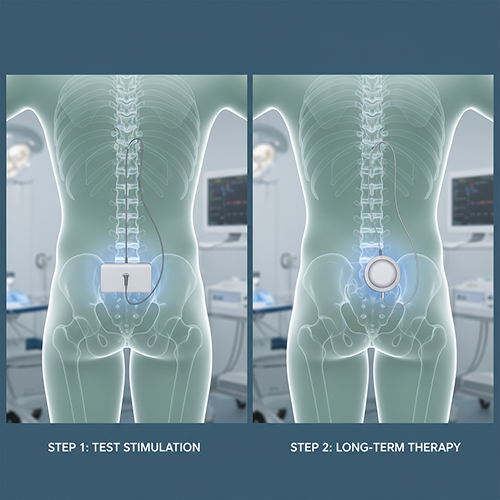

For Women · Advanced Urology. Trusted Care.
Urinary Retention
Urinary retention in women means the bladder cannot empty fully or at all — causes vary and should be assessed — Janak Uro Care, Siwan, Bihar.
Patient-friendly guide
We offer specialised and comfortable care for urological problems in women.
What is this?
Urinary retention in women means the bladder cannot empty fully or at all. Though less common than in men, it can occur due to pelvic organ prolapse, certain medications, nerve problems, or other causes. It can be quite uncomfortable and, if ignored, can lead to complications including repeated infections.
Common symptoms
Talk to us if these sound familiar or keep coming back.
- Difficulty starting to urinate despite the urge
- Weak or slow urine stream
- Sensation of bladder fullness even after urinating
- Abdominal discomfort or pressure in the pelvic area
When to seek help
When to worry: Complete inability to urinate with abdominal pain requires urgent medical attention — do not wait.
→ If something feels ‘not right’ with your bladder, trust that feeling. Our team at Janak Uro Care, Siwan is here to help you find answers and relief.
Common symptoms
Talk to us if these sound familiar or keep coming back.
Difficulty starting to urinate despite the urge
Weak or slow urine stream
Sensation of bladder fullness even after urinating
When to seek help
Your comfort and safety come first.
When to worry
- Complete inability to urinate with abdominal pain requires urgent medical attention — do not wait.
Next step
If something feels ‘not right’ with your bladder, trust that feeling. Our team at Janak Uro Care, Siwan is here to help you find answers and relief.
We’re here for you
Your health deserves expert attention — not guesswork, not delay. Whether you’ve been dealing with a problem for days or years, it is never too late to get the right care. At Janak Uro Care, Siwan, we treat every patient like family — with skill, honesty, and genuine concern.
Janak Uro Care, Siwan, Bihar
Advanced Urology. Trusted Care.